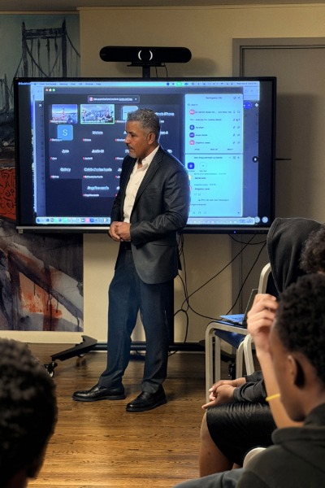

Principal Consultant
Axel
Desarden
Strategic Credentials
- Seven-Time Gunshot Survivor (Lived Experience Anchor)
- Justice-Impacted Filmmaker, Author, & Screenwriter
- Certified Life Coach & Youth Transformation Expert
- Institutional Strategist for Justice-Impacted Populations
The Methodology
Mirror Reflection & Response
The Mirror Reflection & Response (MRR) Methodology is a premium, evidence-based intervention designed to navigate institutional risk while maximizing youth transformation.
The 3-Tier Intervention Loop:
- Tier 1: Cinematic Entry Point – Utilizing high-production film to establish immediate rapport, de-escalate resistance, and create a shared narrative framework.
- Tier 2: Guided Mirror Reflection – A deep-dive session where youth identify their "Mirror Self," analyzing dynamic risk factors and criminogenic triggers in a safe environment.
- Tier 3: Response & Action Dialogue – Moving from thought to behavior. Youth engage in prosocial modeling and draft their "Next Chapter" for reentry success.

Institutional Alignment
Evidence-Based Outcomes
.jpg)
DCJS & RNR Framework Integration
Addressing the Risk-Need-Responsivity (RNR) model by providing high-responsivity programming that targets antisocial cognitions and improves social skills.
Key Institutional Benefits:
- CBI Support: Complements Cognitive Behavioral Interventions through narrative-driven restructuring.
- Recidivism Reduction: Focuses on the "Responsivity" factor often missing in secure facilities.
- Optics & Credibility: Delivers a premium, measurable experience that makes decision-makers look effective internally and externally.
Direct Link to Full Curriculum:
adesarden7.github.io/justice